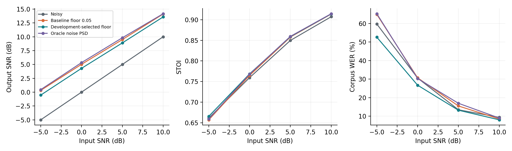
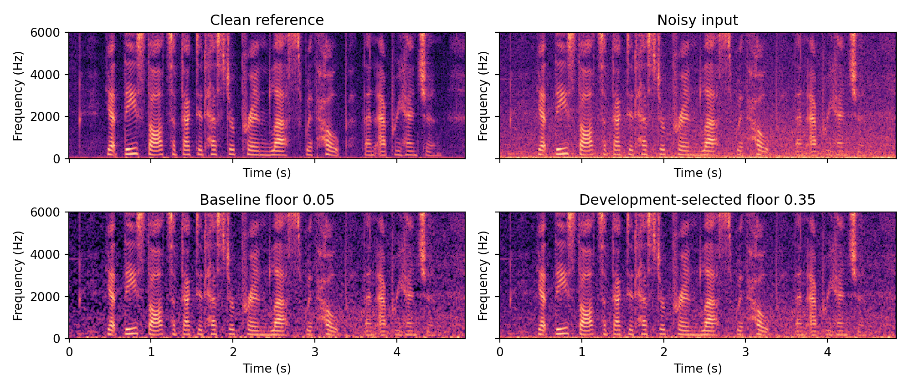

Xinyu Shen | 530137427 | ELEC5305
A controlled multi-speaker study: four development speakers, ten disjoint test speakers, real traffic/cafeteria noise, and 240 test mixtures.
Report PDF · Code and run instructions · Audio comparisons · Video
| Condition | SNR (dB) | STOI | WER (%) |
|---|---|---|---|
| noisy | 2.50 | 0.794 | 28.28 |
| baseline | 7.24 | 0.798 | 29.90 |
| selected | 6.56 | 0.802 | 25.15 |
| oracle | 7.44 | 0.800 | 30.39 |
The selected floor (0.35) is chosen on development data only. Higher SNR is not a guarantee of better recognition. The overall WER gain is driven by white noise; selected filtering remains slightly worse than noisy input in the two real-noise environments.

Test outputs and transcripts · Parameter selection · Speech manifest

The experiment uses a bounded read-speech subset and two noise recordings. It does not establish general superiority across recognisers or environments. Data attribution and AI assistance are documented in the report and README.